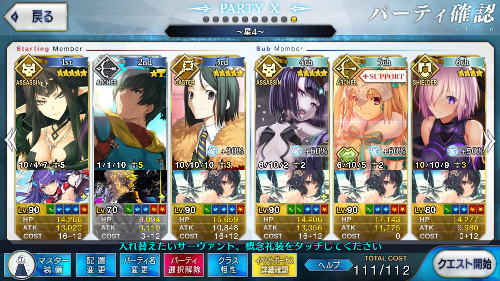

【FGO】2018年夏イベント サーヴァント・サマー・フェスティバル！ ワイキキビーチ
この記事ではFGOイベントの周回を扱います。
編成画像にて最終再臨絵のネタバレがあるのでご注意を
基本方針
- 3T周回する
ドロップアイテム
- ミミ＄札
- 空想探求力
エネミー構成
- 殺一色
- 2wソウルイーターが11万程度
- 3wオジマンディアスが18万程度
編成例

苦し紛れの不安定3ターン周回
ステラ→孔明と酒呑童子でバフ盛って宝具→セミラミスで驕慢王の美酒からの宝具
2,3wどちらも追撃が必須であり、2wが特にキツい
ペインティング・サマーは凸ると初期NPが50になる
アーラシュは凸虚数装備でも良い
探求力ボーナスは凸1枚（60） + 未凸2枚（30x2） + マシュ（20） + フレンド分で、140+α
周回用キャラ選別
アーラシュ
いつもの開幕1w担当
聖杯を1つ入れておけば安定して1wを吹き飛ばせる
酒呑童子
全体Arts宝具アサシン
ペインティング・サマーが初期NP50に加えてArts性能を強化してくれるので、それを活かすなら
ただし、宝具レベル2では自前のバフ・デバフをしっかり鍛えても2wを撃ち漏らすため、追撃必須
全体に持続する攻撃力バフを配れるため、3wのための火力も補いやすい
ニトクリス（殺）
全体Arts宝具アサシン
酒呑童子と似た条件の星4サーヴァント
天属性のため天地人相性はよく、水着サーヴァントのためポイント追加もある
ただし、ATKの差はいかんともしがたく、全体バフもない点で酒天童子に劣る
セミラミス
NPチャージを持つ全体宝具アサシン
星を出しておけば強力な火力補助もでき、2,3wのどちらかを担当させたい
牛若丸（殺）
NPを最大40チャージできる全体宝具アサシン
クイック宝具のため、スカサハ＝スカディのサポートを受けられる
人属性であり、3wのオジマンディアスに対して天地人有利を取れる
凸黒聖杯＋宝具レベル5＋スカディの支援で3wを消し飛ばすことが可能
ただし、NPは自前で40、スカディで50なので残り10をどこかで補う必要がある
パールヴァティー
NPパズルのオトモ
開幕凸カレスコで宝具をブッパして星とNPをばらまきつつ、その後につなげる役
星が出せるためセミラミスとも相性が良い